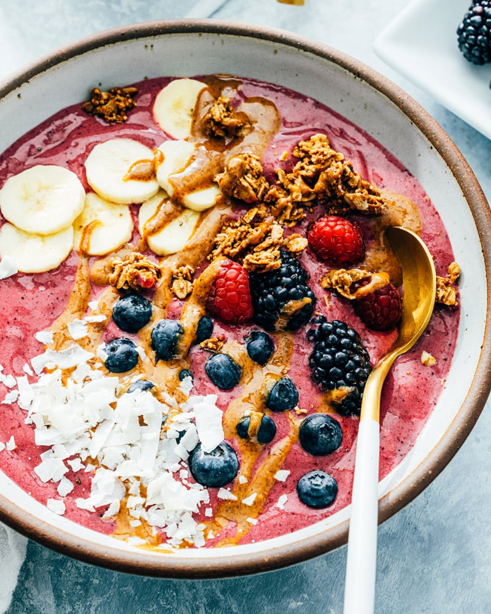

Protein Smoothie Bowl

Ingredients:
- 1 frozen banana
- 1 cup frozen mixed berries (blueberries, strawberries, etc.)
- 1 scoop protein powder (whey or plant-based)
- 1/2 cup Greek yogurt (plain or flavored)
- 1/4 cup milk (dairy or plant-based)
- Toppings: sliced fresh fruits, granola, nuts, seeds, and a drizzle of honey
Instructions:
- In a blender, combine the frozen banana, frozen mixed berries, protein powder, Greek yogurt, and milk.
- Blend until smooth and creamy, adding more milk if needed to achieve the desired consistency.
- Pour the smoothie into a bowl.
- Top with sliced fresh fruits, granola, nuts, seeds, and a drizzle of honey for extra flavor and texture.
- Enjoy your protein-rich smoothie bowl, perfect for refueling after a workout or as a refreshing snack.
Home
Back Up